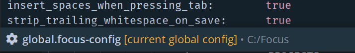

Installation
Download the executable for your target platform and put it in any directory you like.
Launch the executable. Once launched, it will generate its config files.
-
On Windows, it will create a
global.focus-configfile and aprojectsandtempfolders next to itself (therefore, the directory must be writable). -
On macOS, these files will be found in
/Users/YOURNAME/Library/Application Support/dev.focus-editor/. -
On Linux, these files will be found in
${XDG_CONFIG_HOME}/focus-editor/(which usually expands to${HOME}/.config/focus-editor).
After installing, you can edit the global config of the editor, or create one or more projects to be able to quickly switch between them.
Global Config
The editor is configured using a simple text file called global.focus-config, which you can quickly open by opening the Command Palette
(Alt-X by default) and selecting Open Global Config.
The config file is a simple text file which should be easy to read and edit to your liking. We suggest that you read through it to familiarize yourself with what options are available.
- Config files have a built-in smart highlighting, so it's best to edit them using Focus itself. In this way it should tell you about any potential problems it detects, such as invalid editor actions, duplicate key bindings or invalid file paths.
- When an active config file is saved the changes should be automatically applied. If you have edited any workspace directories, the workspace will be reloaded.
-
You can see whether the config file you're editing is currently active by looking at the footer, which should have a label telling you it's active:

NOTE: The base editor is not designed to be extensible in the same way Vim or Emacs are. Plugin support is not planned. Any customization that is not found in the config file must be done by modifying the source code. This is the tradeoff we are making to keep the upstream project as simple as possible, while offering a simple and approachable codebase for those who do want to extend it.
Projects
In Focus, a "project" is a user defined config file that contains project-specific settings. A project can override any settings that are present in the global config file. Projects can specify one or more directories to add to the active workspace.
NOTE: when overriding settings with you project config bear in mind that some of the settings, such as workspace dirs, build commands etc. will completely replace
the global settings, while other options (such as keymaps or the options in the [[settings]] block) will be merged with the global ones, allowing you
to only replace a few and leave the rest intact.
Creating a new project
To create a new project, enter the projects/ directory by selecting the command Open Directory With Project Files in the command palette
and create a new file with the following naming scheme: Your Project Name.focus-config.
When you first launch Focus, there will be an Example Project.focus-config available for
reference in the projects directory.
Switching to project
In the editor, executing the Switch To Project command will display a menu of available projects to switch to.
When you switch to a project, Focus scans the configured workspace directories and loads all text files.
Commands such as Search In Workspace will operate over all loaded files.
NOTE: when you switch to project or modify the list of workspace dirs in any way, the existing workspace will be removed and a new one will be scanned.
Alternatively, you can load projects at startup in one of the following ways:
- By passing a project name as a parameter:
focus -project "Project Name"orfocus -project path/to/project.focus-config. - By passing in a directory path which contains a file named
.focus-config(not[project name].focus-config!). This file will be loaded as a Focus project. - By launching Focus from a directory containing a file named
.focus-config.
When a project is opened by any means it is remembered and can be then switched to using the Switch To Project command.
Hint: if you want to load last project on startup, set load_most_recent_project_on_start to true in the config.
FAQ
How do I add syntax highlighting for language X?
Ask on our Discord server. We might be able to add it or prioritize adding it. In Focus syntax highlighting is done by writing a language lexer. It is straightforward enough to add a lexer for a new language, but you have to have a Jai compiler.
Is there a VIM mode?
There isn't, and it's unlikely there ever will be in the base editor. Someone might fork the editor and add one someday.